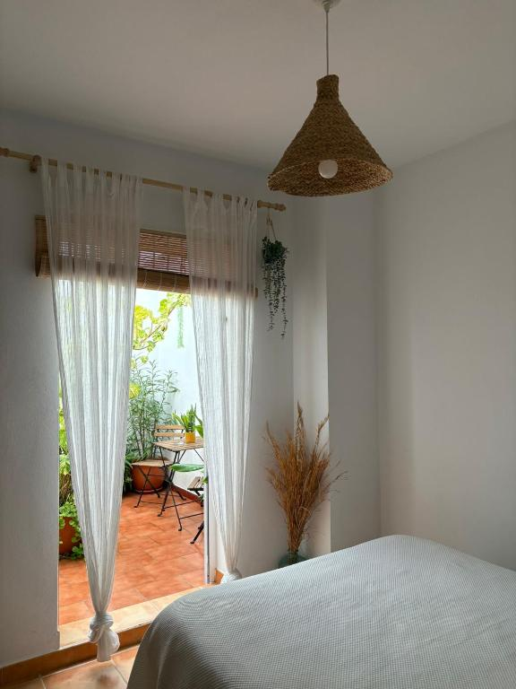
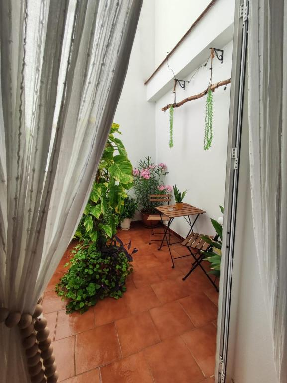
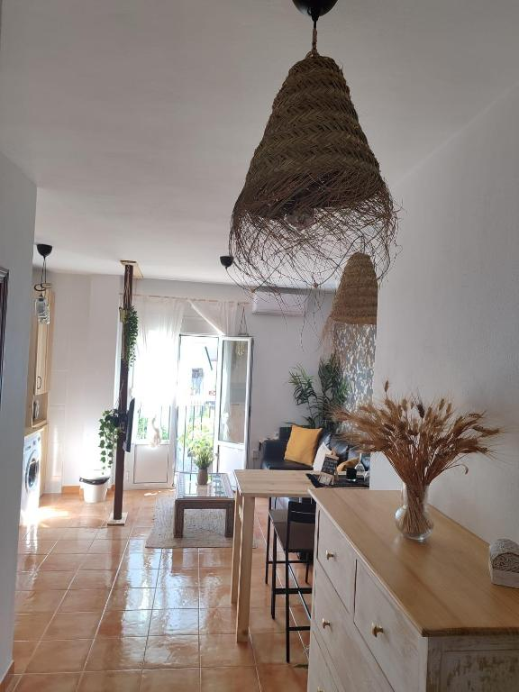
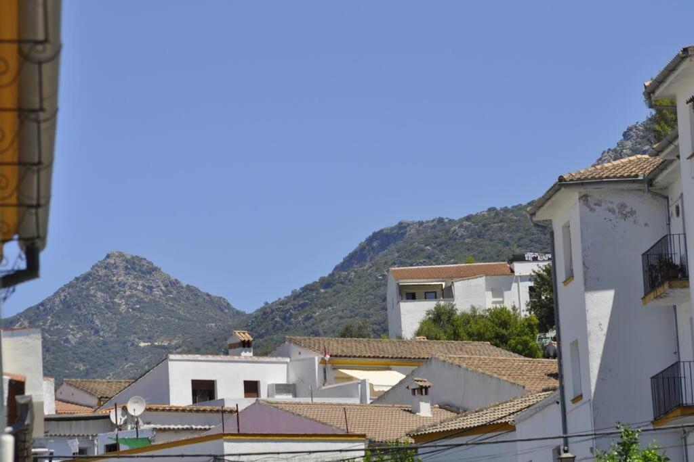

Azahares
MEDITERRANEAN SLOW STAY
Azahares, desde dentro.
EL BOSQUE · CÁDIZ01 — AZAHARES
Un nombre.
Un lugar.
El Bosque.
Azahares es un apartamento turístico en El Bosque, en la Sierra de Cádiz.
Un recorrido en imágenes por el salón-comedor, el dormitorio y el patio: madera, fibras naturales y plantas.
Conoce sus espacios en las fotografías y consulta las condiciones del alojamiento en su ficha externa.
Ver Azahares en Booking (se abre en otra pestaña)


02 — EL DESTINO
La luz de la cal.
El verde de la sierra.
El Bosque se sitúa junto al río Majaceite, al pie de la Sierra de Albarracín. Un paisaje de valles, agua y calles blancas.

EL BOSQUE, A OTRA ESCALAEntre el pueblo
Entre el pueblo
y el agua.
El sendero del río Majaceite une El Bosque y Benamahoma a través de un bosque de ribera.
Consultar el sendero (se abre en otra pestaña)SIERRA DE CÁDIZ · ANDALUCÍAMás sobre El Bosque en Cádiz Turismo (se abre en otra pestaña)
03 — ENCUÉNTRANOS EN EL BOSQUE
Nos vemos
en la sierra.
Azahares Apartamento Turístico
11670 El BosqueCádiz, EspañaExplorar El Bosque en el mapa (se abre en otra pestaña)El mapa muestra el municipio, no la ubicación exacta del apartamento.